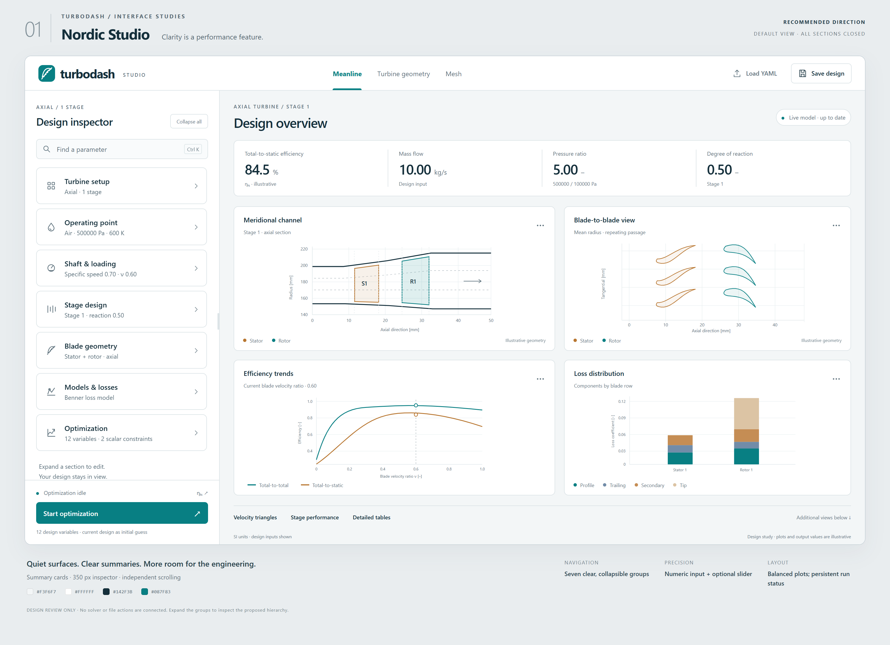
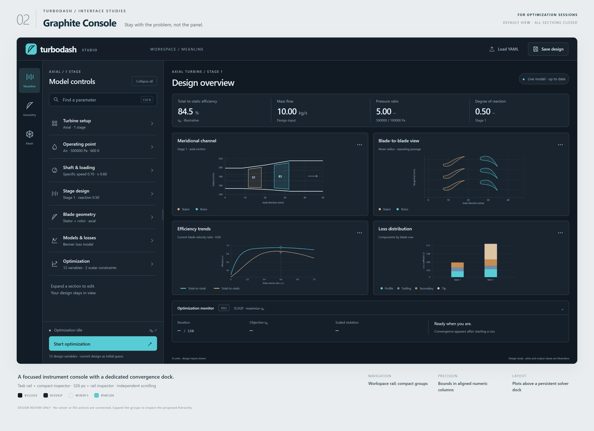
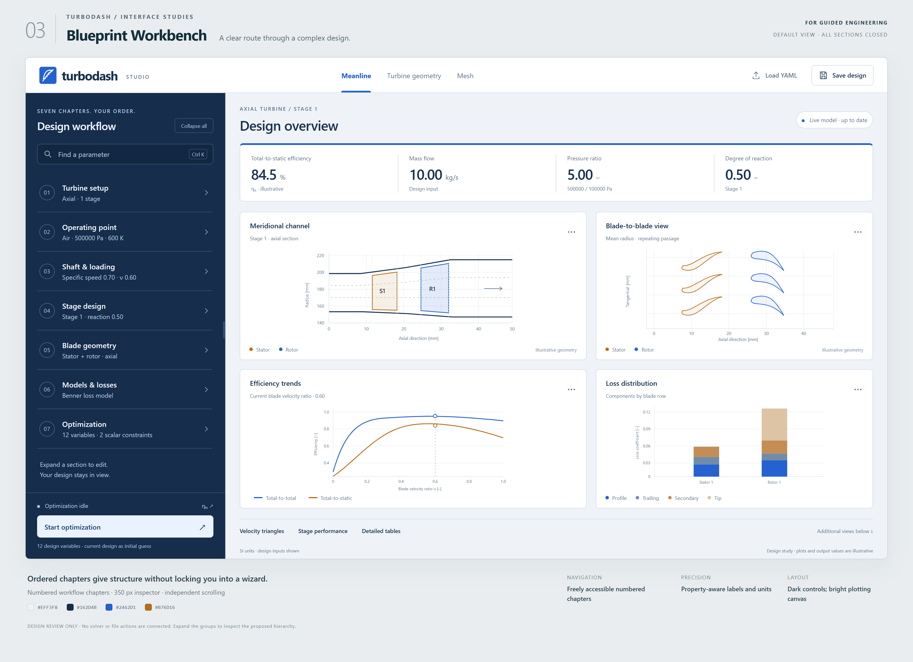
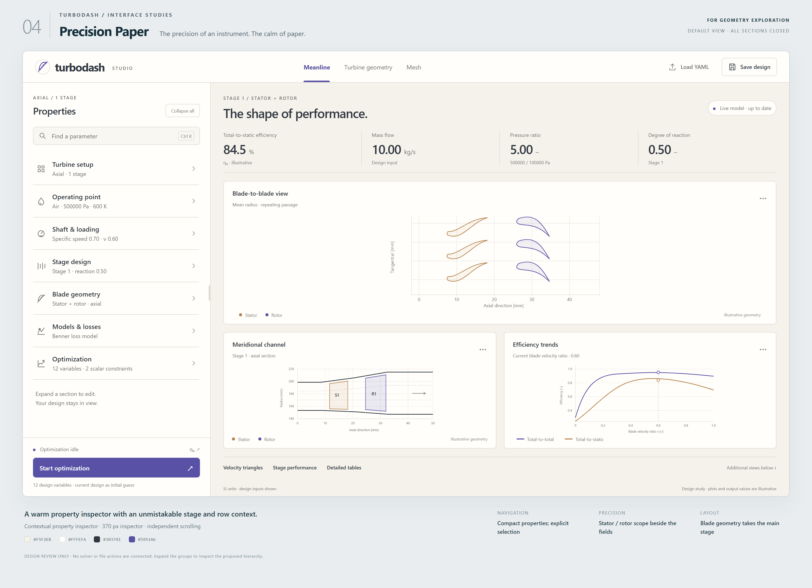

01
Nordic Studio
RECOMMENDEDQuiet surfaces. Clear summaries. More room for the engineering.


Summary cards
Four ways to make scientific precision feel effortless.

Quiet surfaces. Clear summaries. More room for the engineering.

A focused instrument console with a dedicated convergence dock.

Ordered chapters give structure without locking you into a wizard.

A warm property inspector with an unmistakable stage and row context.